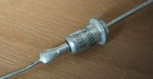
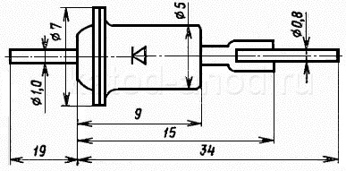

Стабилитрон Д818
(Д818А, Д818Б, Д818В, Д818Г, Д818Д, Д818Е)
Стабилитрон Д818 (Д818А, Д818Б, Д818В, Д818Г, Д818Д, Д818Е) - диффузионно-сплавной, прецизионный, кремниевый, малой мощности. Применяется в основном для стабилизации номинального напряжения 9 В с повышенными требованиями к стабильности напряжения в диапазоне температур от -60 до +125°С. Диапазон токов стабилизации: от 3 до 33 мА.
Имеет металлостеклянный корпус и гибкие выводы. На корпусе нанесён тип стабилитрона Д818 и его цоколёвка. Его корпус в рабочем режиме является анодом (положительным электродом).
Масса - не более 1 г.


Рис. 1 - Внешний вид и размеры стабилитрона Д818
Таблица 1
| Напряжение стабилизации стабилитрона Д818 при Iст = 10 мА: | |
| при Т = +25°C: | |
| Д818А | 9...10,35 В |
| Д818Б | 7,65...9 В |
| Д818В | 8,1...9,9 В |
| Д818Г, Д818Д, Д818Е | 8,55...9,45 В |
| при Т = -60°C: | |
| Д818А | 8,82...10,35 В |
| Д818Б | 7,65...9,16 В |
| Д818В | 8,02...10 В |
| Д818Г | 8,51...9,5 В |
| Д818Д | 8,53...9,47 В |
| Д818Е | 8,54...9,46 В |
| при Т = +125°C: | |
| Д818А | 9...10,58 В |
| Д818Б | 7,48...9 В |
| Д818В | 8,01...10,01 В |
| Д818Г | 8,5...9,5 В |
| Д818Д | 8,53...9,47 В |
| Д818Е | 8,54...9,46 В |
| Уход напряжения стабилизации в диапазоне темрератур от -60 до +125°C при Iст = 10 мА: |
|
| Д818А | 0...0,32 В |
| Д818Б | -0,32...0 В |
| Д818В | ±160 мВ |
| Д818Г | ±80 мВ |
| Д818Д | ±32 мВ |
| Д818Е | ±16 мВ |
| Временная нестабильность напряжения стабилизации при Iст = 10 мА: | |
| Д818А | ±0,11 % |
| Д818Б | ±0,13 % |
| Д818В, Д818Г, Д818Д, Д818Е | ±0,12 % |
| Дифференциальное сопротивление, не более: | |
| при Iст = 10 мА и Т = -60...+25°C | 18 Ом |
| при Iст = 10 мА и Т = +125°C | 25 Ом |
| при Iст= 3 мА и Т = +25°C | 70 Ом |
Таблица 2
| Минимальный ток стабилизации | 3 мА |
| Максимальный ток стабилизации: | |
| при Т ≤ +50°C | 33 мА |
| при Т = +125°C | 11 мА |
| Рассеиваемая мощность: | |
| при Т ≤ +50°C | 300 мВт |
| при Т = +125°C | 100 мВт |
| Рабочая температура (окружающей среды) | -60...+125°C |
Допускается параллельное или последовательное соединение любого числа стабилитронов.
Источники
katod-anod.ru - Стабилитрон Д818 (Д818А, Д818Б, Д818В, Д818Г, Д818Д, Д818Е)